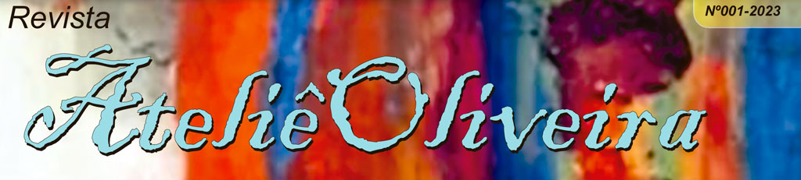
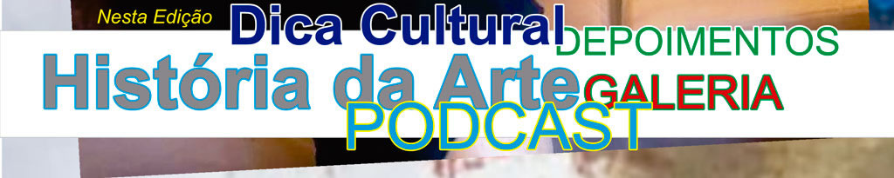

HOME | DEPOIMENTOS | DICA CULTURAL | DIA DAS MÃES | GALERIA I | GALERIA II | ARTE EDUCAÇÃO | REVISTAS | CONTATO
EDITORIAL
Editorial Revista Ateliê Oliveira – Edição 001
A cultura e tecnologia estão presentes na realidade de todos nós. Nos últimos anos,
com a popularização dos dispositivos tecnológicos, tivemos um grande aumento
no número de pessoas que fazem uso desses dispositivos digitais.
É notório também que a cultura e a tecnologia na contemporaneidade,
revolucionaram a forma como interagimos com a arte.
Antes, o contato com o mundo artístico era feito, na grande maioria das vezes, por meio
da presença física, em visitas a museus e galerias, ou através de jornais e revistas
o que tornava o acesso mais limitado.
Atualmente, temos muitas plataformas de mídia que possibilitam o acesso à arte para
um público bem maior: basta ter acesso a internet para também ter acesso à um amplo
acervo artístico.
A revista Ateliê Oliveira surgiu com o propósito de divulgar a arte para um público
que almeja a proximidade com obras artísticas de uma forma mais constante e simples. Com você leitor, compartilhamos
nosso sonho: disseminar as diversas manifestações da arte, que dentre outras coisas é a capacidade que o ser humano
tem de criar, de se expressar, de dominar a matéria e o pensamento, independentemente de uma finalidade utilitária.
Boa leitura!
HOME | DEPOIMENTOS | DICA CULTURAL | DIA DAS MÃES | GALERIA I | GALERIA II | ARTE EDUCAÇÃO | CONTATO